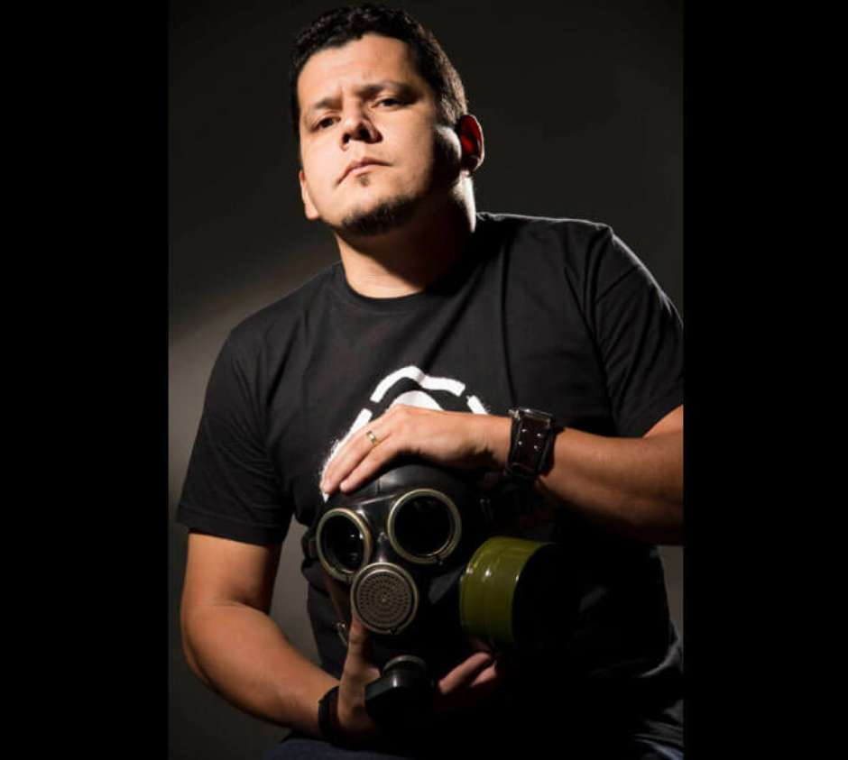
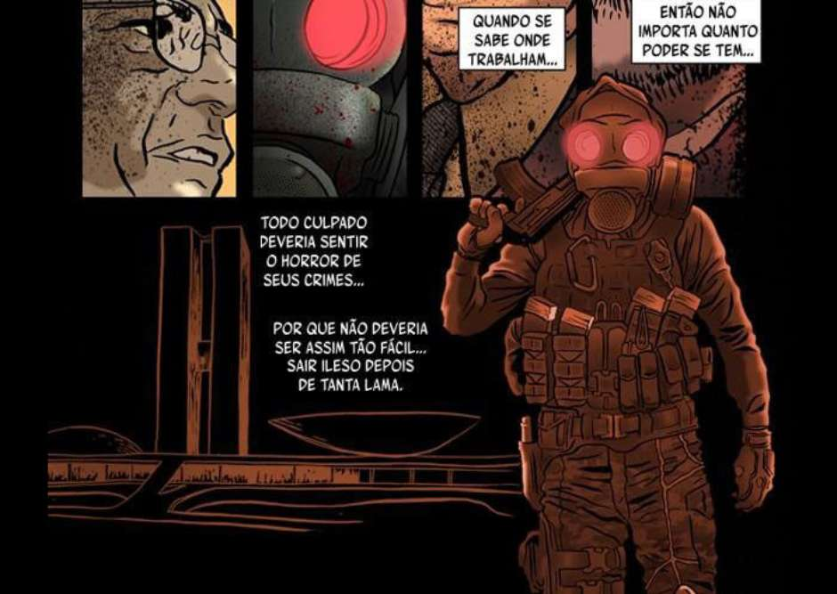
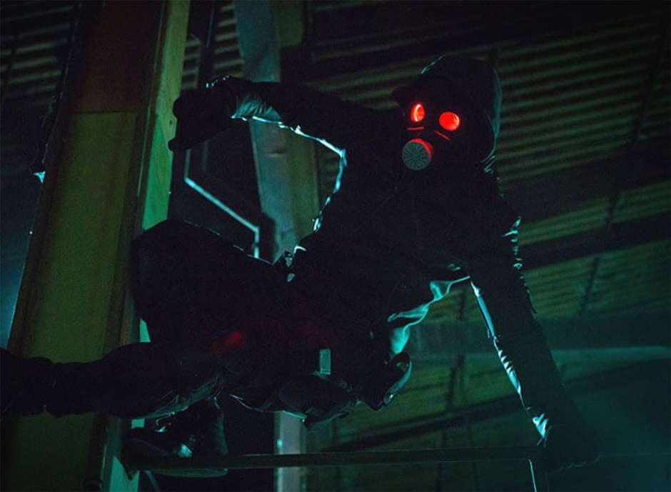

A sinopse do filme O Doutrinador, que chega aos cinemas em setembro, já deixa claro: não vai faltar sangue, violência e justiça sendo feita com as próprias mãos. As mãos em questão são de Miguel, um agente federal que após uma tragédia pessoal passa a ter uma única meta: exterminar todo e qualquer corrupto, limpando o Brasil.
A obra no cinema faz parte de um plano inovador no Brasil. Nascido nas HQs, o personagem de Luciano Cunha passou por um caminho de conquista de fãs, atuando em eventos reais como os protestos pelo aumento da passagem, que aconteceram em São Paulo. Após o lançamento do filme, o personagem será protagonista de uma série e será vivido pelo mesmo ator, Kiko Pissolato
É a primeira vez que vemos um plano transmídia para um personagem brasileiro. Para você ter uma ideia, a Turma da Mônica, cujos quadrinhos são um sinônimo de HQ brasileira, nunca teve um projeto semelhante.
Geek: O personagem está desde 2008 trazendo uma mensagem de revolução, de indignação e criando uma guerra contra a corrupção. Dez anos depois, vemos milhares de pessoas com o mesmo sentimento. Você imaginou que sua criação faria tanto sentido no mundo real?
Luciano Cunha: Não, não mesmo. Quando criei o personagem eu só queria extravasar a minha revolta, colocar minha indignação no papel. Mas quando comecei a mostrar aos amigos mais próximos, senti que a identificação com as pessoas era muito forte.
O Doutrinador é um soldado que segue suas próprias táticas. Neste momento do Brasil, às vésperas de uma eleição conturbada, como ele agiria? Ele escolheria um lado?
Não, ele seria exatamente como foi criado: ele não tem lado, o lado dele é ser anti-corrupção. E há desonestidade em todos os espectros da sociedade e, principalmente, não há partido no Congresso que possa levantar essa bandeira de lisura.
Você é designer de formação, mas suas histórias tem uma maturidade que impressiona. O que te fez gostar de quadrinhos, quais são suas referências?
Eu gosto de quadrinhos desde que me lembro de ter um gibi em minhas mãos, aos 6 anos. Lembro do meu pai comprando o gibi pra mim, era uma edição do Homem-Aranha. Desde então nunca mais parei de ler, faz parte da minha vida. Minhas referências são tantas que é difícil listar, mas com certeza Jack Kirby, Frank Miller, Jim Steranko, John Buscema, Paul Gulacy. No Brasil, Mozart Couto e Flavio Colin.
O quanto você se envolveu com o filme? Pelo que já foi divulgado ele é uma adaptação fiel das HQs.
Graças à generosidade da Downtown Filmes e da Paris Filmes, me envolvi bastante, eles me deixaram muito perto do filme, já que fui um dos roteiristas e estou participando até agora, não só pela Guará Entretenimento como na campanha de divulgação. A adaptação é muito fiel no visual, mas há várias adequações na história, até mesmo pelas diferenciais de uma mídia para outra.
Como foi pra você ver sua criação ganhar vida através do Kiko Pissolato? Ele está superfeliz com o papel.
Difícil expressar. O Kiko é uma cara fantástico, super do bem e parece ter nascido para encarnar o personagem. Ninguém poderia atuar melhor do que ele nessa produção.
Qual a sua mensagem para o grande público que conhecerá o Doutrinador por meio do filme e da série?
Que vá ao cinema com o coração aberto, encarando o filme como uma peça de ficção, uma realidade comentada, sem extremismos políticos. Que todos possam ver a produção como entretenimento e, mas importante de tudo, como um sinal para que o audiovisual brasileiro se aventure por esse viés pop. Filmes de gênero são valorizados no mundo inteiro, precisamos ter esse caminho aberto em nosso país, já que nossa cena de quadrinhos está mais efervescente e cheia de talentos do que nunca.
Pra terminar, em qual super-herói do cinema o Doutrinador daria uns belos sopapos, sem pensar duas vezes?
Que pergunta, hein? Acho que sem dúvida o Aquaman! Nunca gostei dele! [risos]
O Doutrinador chega às telonas em setembro, dirigido por Gustavo Bonafé e Fábio Mendonça. Além de Kiko Pissolato, o elenco conta com Du Moscovis, Marília Gabriela, Helena Ranaldi, Tainá Medina, Samuel de Assis e Tuca Andrada. A produção é da Paris Entretenimento e a distribuição da Downtown Filmes.
Prepare-se para muito sangue, referências ao Batman, mais sangue, aparições do Luciano em cenas, referências ao Justiceiro e mais uma boa quantia de sangue corrupto.
Noticia Oriunda site Terra